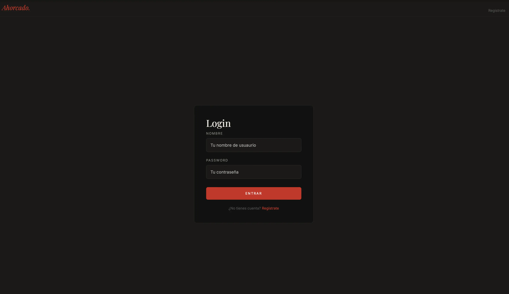
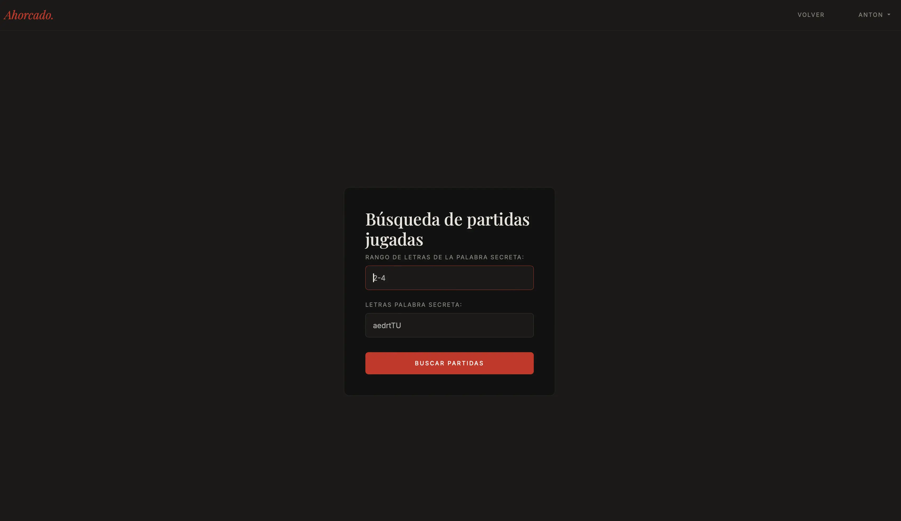
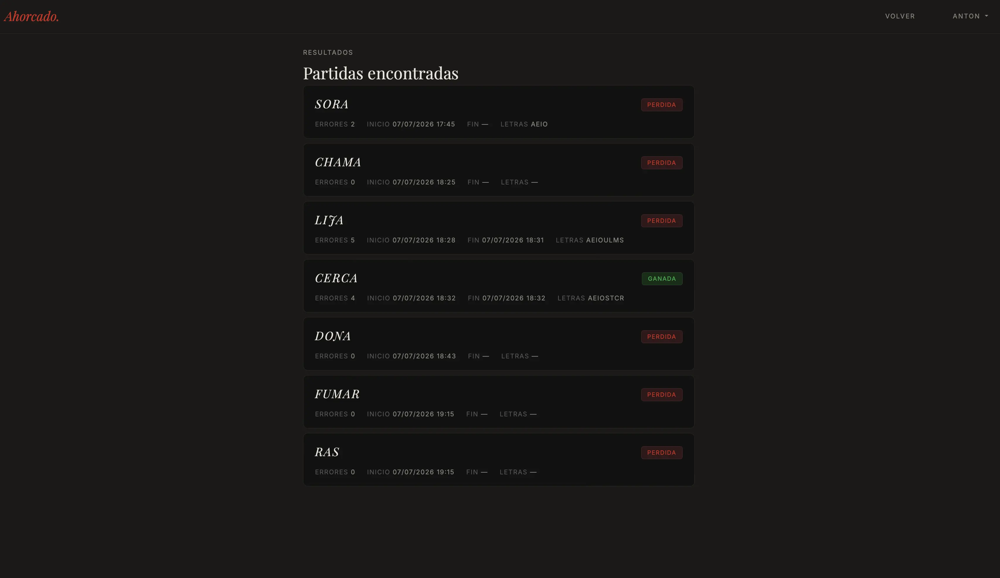
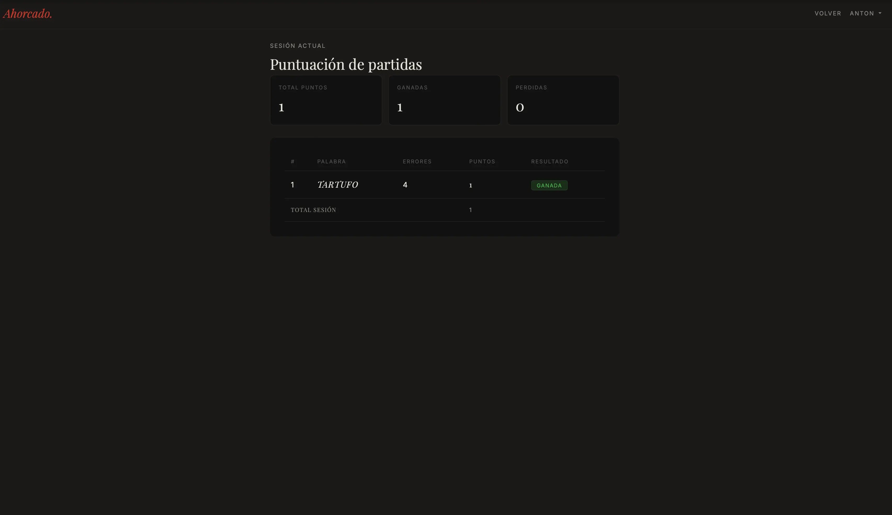
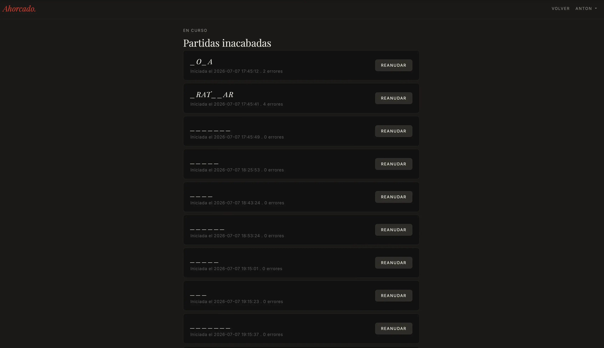
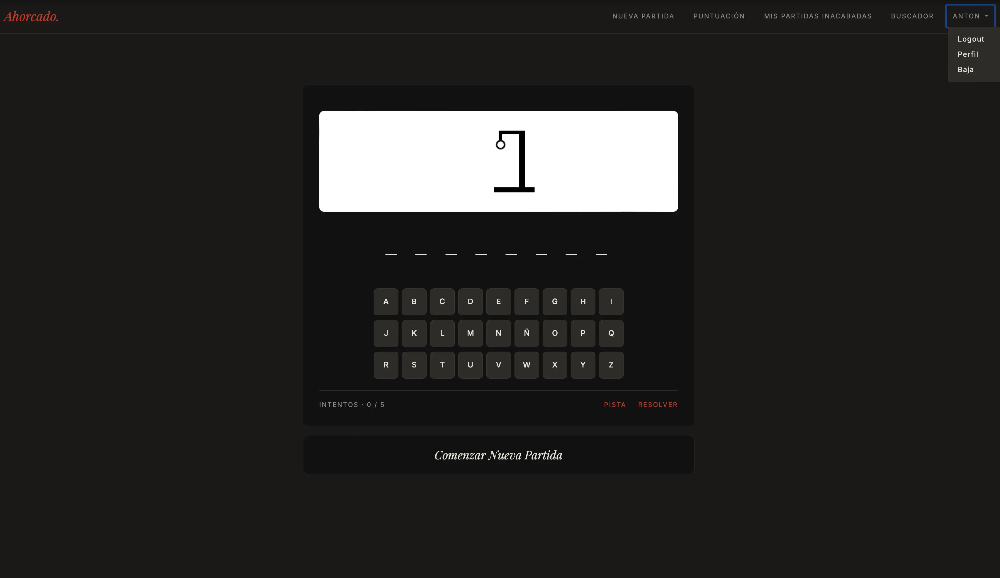

El ahorcado
Cinco prácticas de la FP fusionadas en una sola aplicación.







- Resumen
- El clásico juego de adivinar palabras, hecho en PHP para el módulo de Desarrollo Web en Entorno Servidor del FP de DAW.
- El reto
- Durante los dos últimos meses del curso practicamos cada funcionalidad por separado, cada una en un código base diferente, empezando desde cero: login, niveles, pistas, partidas guardadas, ... Yo decidí integrar las que me parecían más interesantes en una sola aplicación y cambiarle el diseño, que en origen estaba hecho en Bootstrap.
- Stack
-
- PHP arquitectura MVC
- MySQL con PDO y consultas preparadas
- BladeOne para las vistas
- JavaScript con jQuery y AJAX para las pistas
- HTML5 Y CSS3
- Composer y variables de entorno .env
- Una decisión
-
La dificultad no la puse a mano, usé la clase
AnalizadorComplejidadque puntúa cada palabra del 0 al 4 según tres criterios.- Su longitud: más de 8 letras, más difícil.
- Si tiene vocales seguidas, que son más fáciles de acertar.
- Si lleva letras poco frecuentes como la x, z, q, k, h, w
- Lo que más me costó
- Juntar cinco prácticas que no se habían hecho para convivir, cada una tenía sus propias sesiones, sus nombres de variables y su base de datos. Tuve que unificarlo todo en una sola estructura.
- Lo que hoy haría distinto
-
Revisando el código meses después encontré cosas que hoy haría de otra forma.:
-
Las contraseñas se guardaban en texto plano. Ahora se guardan
con
password_hash. - El nivel 0 de dificultad no podía salir nunca: pedía una palabra sin "r" que contuviera "ar", "er" o "ir".
-
Contaba las letras con
strlen, que cuenta bytes: "camión" le parecía de 7 letras. Ahora usomb_strlen. -
Había subido el archivo
.enval repositorio. Ahora está en el.gitignore.
-
Las contraseñas se guardaban en texto plano. Ahora se guardan
con